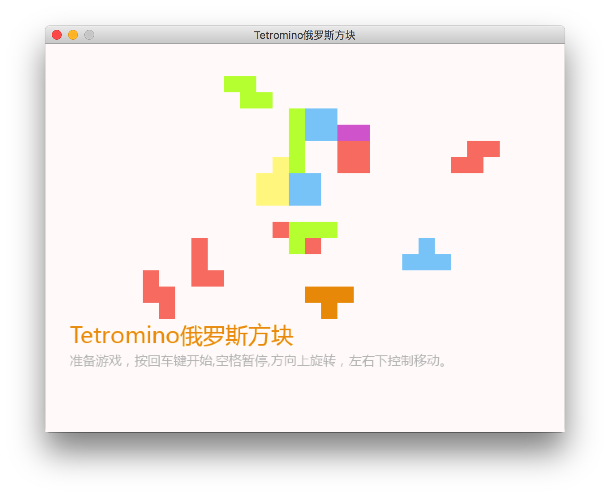
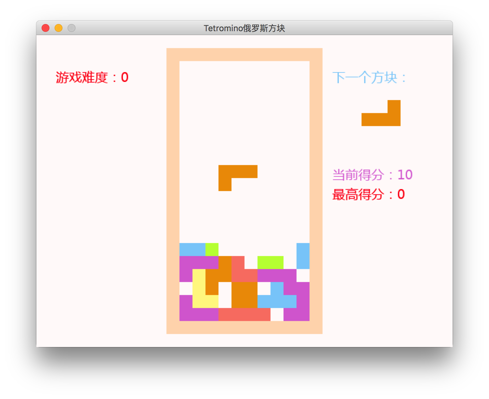
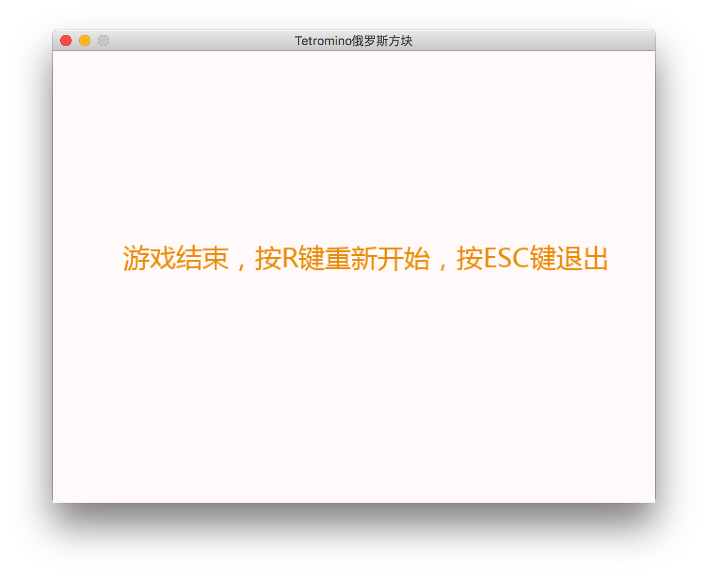

“编学编玩”用Pygame编写游戏（9）Tetromino俄罗斯方块游戏
2018-01-13 16:00:40 pygame
记得以前用java写过一个tetromino,这么多年了，回头想想，竟然什么都不记得了。。。愿码界的神们原谅我的无知与过错，如何用Python来写一个俄罗斯方块游戏呢？ 如果你感兴趣， Follow me, please.
无图无真相，先上图：
  
Tetromino游戏构思
很多时候，我们编写一个游戏或是软件总是不知道从何入下手没有头绪，感觉思绪一阵乱麻，你没有？确定没有这种感觉吗？好吧，大神求带！！！
Tetromino如果我们从逻辑上拆分，我这里能想到三点：
- 一个长方形的场景
- 下落的方块
- 游戏中的逻辑
当然，你可以更详细的分出更多的逻辑，但我只想把这个游戏简化，这样我们可以有一处可以开始的入手的地方，其实每次编写游戏的时候，你有没有那种感觉？觉得自己就是上帝是神。 游戏就是世界，你可以在游戏里创造出一切，当然你得有这个能力，好吧，万能的神，我们何不先创建一个游戏窗口，绘制好游戏中的场景先？
友情提示，本系列教程已经进入实例开发，如果你对Pygame,PY_RPG框架不太了解的话，请翻看以前的教程
Tetromino中的游戏板
Tetromino类是本游戏的重点及主要场景，除了游戏的开始与结束画面以外，所有的游戏逻辑都集中在这个class中。 首先我们定义一下游戏场景中的尺寸，比如小方块的尺寸，这里我定义为20象素，场景中的游戏板是一个12X22的长方形， 其中上下左右各留出一行或列做为边界，其它10X20做为游戏场景，这样的我们可以先定义出常量，以后就可以方便修改游戏场景属性。 设置Tetromino类中的self.start = True，这样方便调试游戏。
绘制board游戏板
self.board = [[0 for col in range(BOARDHEIGHT)] for row in range(BOARDWIDTH)] # 场景中的board
通过上边列表推导，我们创建一个二维的list，用来存放游戏场景中的方块数据，方块有三种状态：0无方块，1被占用的方块，2围墙方块。 在游戏开始时，我们初始化这个二维list，然后，在再游戏中修改这个list即可表示出游戏中的场景状态。 有这个list，我们在draw()方法中通过循环迭代绘制游戏的背景色及游戏场景中的方块。当然，现在只能绘制出外围的方块。
下落的方块
下落的方块用多维数组的表达方式有很多种，数据结构直接影响到你在游戏中数据调用的方法，我这里采用了一个字典组合多维数组进行表示。 具体的数值及属性你可以在Piece.shapes中找到，Piece表示一组4X4由0和1组成的下落的方块，当新建对象的时候会随机初始化其形状。 Tetromino类中有两个Piece的属性对象，一个用来放置准备下落的方块，一个为当前正在下落的方块，有了方块我们就可以让他在场景中下落了。 这样，我们场景中有了下落的方块了，你可以看到它在慢慢的下落，到此游戏场景中的主要元素我们已经搭建完毕，余下的就是逻辑判断了。
游戏中的逻辑
这个游戏的核心逻辑个人觉得就是： 判断当前下落方块所处的位置是否合法 ，稍后你就会知道，很多逻辑都依靠这个逻辑来进行判断，既然他这么重要， 我们来看看怎么实现它。想想整个游戏场景就是一个二组的数组，那些下落的方块，变动的坐标，你首先要在脑海里形成这种数据模型，至少得有个大概， 一个下落的方块中有16个小方块，通过循环迭代的方法我们就能获得到他们的坐标，并可以兑换成场景中board的索引，如果我们可以比较这两个值， 就可以得到当前下落方块的位置是否合法，这个合法包括：下落到底，碰到已有的方块，遇到边界等。了解了原理，我们就来实现吧 伪代码：
for a in range(w):
for b in range(h):
if (shapes[type][direction][b][a] == 1 and board[x + b][
y + a] == 2) or (
shapes[type][direction][b][a] == 1 and board[x + b][
y + a] == 1):
return 0
return 1
原理：利用当前下落方块中有方块那部分的坐标与索引出来的board的索引值是否有冲突来进行判断，当然在判断时需要超前一步，不然当前已经冲突的话就晚了。 有了这个方法,我们就可以做一些其它判断，比如方块是否到底，添加方块到场景，方块是否可以旋转，消层等。 实现了这些逻辑的判断，我们大体上就完成了游戏的编写，细节就在于你的探索了，加油！
本文源码下载
请git clone My_pygame下所有代码，以免造成游戏跑不起来的情况。
本例源文件：
PY_RPG.Tetromino.py
如果您有什么问题，欢迎加入Python/Javascript学习讨论群询问
Python/Javascript学习QQ群号：217840699